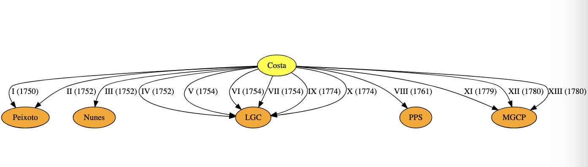

Previous slide Next slide Toggle fullscreen Open presenter view
L'Abate Portoghese
Abott António da Costa (1714-1780?) was a Portuguese musician who, born in the city of Porto , left the country in 1749/50 for Rome .
Later travelling to Venice and Paris , he eventually settled in Vienna , where he is thought to have died around 1780.
Misanthrope, he despised the positions offered to him, living most of his life in poverty.
His intelligence and idiosyncratic behaviour attracted the attention of the high nobility, in whose salons he sometimes played his compositions for violin or guitar.
First news (1750)
"Pedi um passaporte em Santiago e não mo deram (...) e duas vezes estive preso (...) não posso dizer n'uma carta o que passei em quatro mezes e tanto de vida de novellas (...) "
(Letter I, 1750, sent to friend João Peixoto)
First news (1750)
He may have fled because he had confronted someone very powerful who could harm him.
But...
... why? how?
Back to basics:
who was António da Costa ?
Popular aphorism
"Diz-me com quem andas e dir-te-ei quem és "
("Tell me who you hang out with and I'll tell you who you are ")
Who did hang out with António da Costa before he left Porto?
Sources
13 Letters sent to Porto (1750-1780)
Manuscript copy: ANTT COD. 4296 (old keys: P-2-18, O-2-18)
Studied and published by J. Vasconcelos (1879)
Commented in depth by Teófilo Braga (1879 )
Also commented by Ann Livermore (1945)
Re-published by Lopes Graça (1946)
Other sources
Charles Burney travel diary (1772)
5 Letters exchanged between Martini and Tartini and Costa (1766-1780)
Manuscript scores preserved in the archives of Vienna , Berlin and Bologna .
13 Letters to Porto (1750-1780)

13 Letters to Porto (1750-1780)
5 recipients100+ people mentionedAltogether a complete maze...
Where to start from?
13 Letters to Porto (1750-1780)
In the diagrams, let
a → b a \rightarrow b a → b
mean:
A. da Costa mentioned b b b a a a
That is,
a a a b b b
First question:
Did these 5 recipients know each other?
The 13 Letters to Porto (1750-1780)
5 recipients21 individuals mentioned in more than one letter.
Roughly, two clusters = music -related + others.
The 13 Letters (1750-1780)
To start unravelling the "puzzle", let us record the recipients whose names are given in full:
Manuel Gomes Costa Pacheco (MGCP) - letters XI, XII, XIII
Pedro Pereira de S.Paio (PPS) - letter VIII
Luís Costa Gomes (LCG) - letters IV-VII, IX and X.
Let us search for them in archival sources.
Manuel Gomes Costa Pacheco
1768 - Process of qualification for Military Order of Christ Knighthood.
"Diligência de habilitação para a Ordem de Cristo " of Manuel Gomes Costa Pacheco , born in Porto in 1733 and living in Vila da Feira .
(ANTT 7637352
This document mentions his parents Luís Gomes Costa and Clara Luísa Pacheco living in the Ferraria de Cima Street, Parish of Vitória , Porto.
Luís Gomes Costa
Luís Gomes Costa , father of Manuel , is referred to as
a renowned jurisconsult, lawyer of the Relação (Royal Court of Appeal) and often Juíz dos Órfãos (= orphans protector in patrimonial inheritance cases).
Luís Gomes Costa
Cross-checking with the Student Registry of the University of Coimbra :
1730 : Luís Gomes Costa , son of José Gomes Costa (Porto), enrolled as Law student on 1730-10-01 and graduated on 1735-07-03 .
(Source: AUC 202836 )
The "Snr. Doutor"
Cross-checking:
Luís Gomes Costa is recipient of 6 letters, between 1752 and 1774.
In his letters, António da Costa refers to him as
the "Snr. Doutor "
and
his best friend ever ("o melhor amigo que tive ").
Parish of Vitória (S. Bento)
1758 - According to the information provided in
the parish of Vitória is considered
illustrious and made up of the most noble and enlightened people in the city.
(ANTT 4241286
Ferraria de Cima street
Rua da Ferraria de Cima (Upper Ferraria street) is today's Rua dos Caldeireiros .
As of 1996, Vitória is one of the four districts within the UNESCO World Heritage Classified Zone of Porto .
The Gomes Costa family nucleus
In particular:
When
Who
Where
Description
Reference
1742-06-10
Luís
Vitória
"(...) godparents Father José Alberto Gomes Costa and Quitéria Maria , nun at Monchique António da Costa , all from Ferraria de Cima "
491136
The Gomes Costa family nucleus
Cross-checking:
José Alberto Gomes Costa - a priest, he is oncle of the baptized and mentioned in letters IX, X, XI and XIII.
Possibilities:
António da Costa - quite likely "our man "...
Quitéria Maria - the "snr.ª Quitéria " referred to in 6 letters?
The Gomes Costa family nucleus
When
Who
Where
Description
Reference
1774-10-08
Dr. Luís Gomes Costa † \dagger †
Vitória
Dies aged circa 70, his son Sebastião Gomes Costa being the executor of the will ("testamenteiro ")
491251
Notes:
Letter X (Vienna, 1774-12-24) written unaware of the death of its recipient.
Son Sebastião Gomes Costa is mentioned in letters XI, XII sent to his brother Manuel .
The Gomes Costa family nucleus
When
Who
Where
Description
Reference
1775-11-23
D. Clara Luísa Pacheco † \dagger †
Vitória
Dies aged circa 70 "(...) por lhe dar um acidente de apoplexia "
491251
Notes
Both deaths are the subject of letter XI (1779-12-04) sent to son Manuel :
"(...) notícias (...) ensanguadas com a morte do Sr. seu Pai (...) mas senti muito as outras que V. M. me conta da Sra. sua mãi (...)"
Note the 4 year gap - but A. da Costa knew about Luís Costa 's death one year before.
The Gomes Costa family network
When
Who
Where
Description
Reference
1732-08-13
Luís & Clara Sé
Schoolmaster Rev. Manuel Carneiro de Araújo is witness of marriage
490960
1735-03-01
José
Vitória
Birth: godmother Antónia Rosa Félix, a nun in Monchique Manuel Carneiro de Araújo
491136
School-master Manuel Carneiro de Araújo († \dagger †
"(...) aqui me disse o snr. Lopes, que o snr. mestre-escola da Sé tivera um estupor grande "
The Gomes Costa family network
Rev. Manuel Carneiro de Araújo , schoolmaster of Porto Cathedral
When
Who
Where
Description
Reference
1717-01-16
Manuel Carneiro de Araújo Porto cathedral
As schoolmaster and secretary of the Chapter ("Cabido ") of the Cathedral, he signs a document related to works in the cloister of the Cathedral
(JJB Ferreira-Alves, 2001 )
The Gomes Costa family network
Rev. Manuel Carneiro de Araújo , schoolmaster of Porto Cathedral
When
Who
Where
Description
Reference
1728/29
Rev. Manuel Carneiro de Araújo, schoolmaster
Porto
Provider of Porto's Holy House of Mercy (S.Casa da Misericórdia do Porto )
UP 32942
1744-04-26
Leonor Caetana
Miragaia
daughter of the schoolmaster takes her habit at the convent of Monchique
ANTT 4638421
The Gomes Costa family network
More from the parish records:
When
Who
Where
Description
Reference
1746-01-22
Luísa
Vitória
Birth: godfather D. Frei José Maria da Fonseca e Évora , Bishop of Porto
491136
José Maria da Fonseca "Évora"
He is the "bispo Évora " mentioned in letter X (1774):
"(...) lembra-me o bispo Évora, que a mim já aí se me afigura que nunca se estuporaria, se se deixasse estar em Roma "
The Gomes Costa family network
José Maria da Fonseca "Évora" (1690-1752):
Left for Rome in 1712, as part of the embassy of the Marquis of Fontes
In 1740 he founded a large library in the AraCoeli convent (the Biblioteca Eborense )
He served as Portugal's ambassador in Rome (1728 → \rightarrow → Porto (1741).
He died in Porto in 1752 when Costa was already in Rome .
The Costa Pacheco family (Vila da Feira)
More about Manuel Gomes da Costa Pacheco :
When
Who
Where
Description
Reference
1768-07-20
Margarida
Arouca
Birth of a daughter of Luísa (single) the father being ("deu por pai ") captain Manuel Gomes da Costa Pacheco , notary owner of Vila da Feira ("escrivão proprietário ")
1183231
The Costa Pacheco family (Vila da Feira)
Cross-checking:
When
Who
Where
Description
Reference
1764-06-16
Manuel G.C. Pacheco
Vila da Feira
Notary owner (tabelião)
ANTT 1445904
1783-10-08
Manuel G.C. Pacheco
Coimbra
Enrolls in law, maths and philosophy until 1787
AUC 220452
Last reference as notary public in 1805 (ANTT 1445904 )
Studies in Coimbra after exchange of letters with Costa.
The Costa Pacheco family (Vila da Feira)
Sebastião , Manuel 's younger brother, also followed a Law career:
When
Who
Where
Description
Reference
1758-10-01
Sebastião Gomes Costa Pacheco
Univ. Coimbra
Enrolled as Law student until 1761
AUC 220680
1818-12-27
Dr. Sebastião Gomes Costa Pacheco † \dagger †
Vila da Feira
Death
1255475
The Costa Pacheco family (Vila da Feira)
More about the Costa Pacheco 's descendents in:
Freguesia de S. Nicolau da Vila da Feira by Roberto Vaz de Oliveira, in Aveiro e o seu Distrito, N.º 16, Junta Distrital de Aveiro, December 1973
Available on-line . Aside, from the same source:
Picture of Sebastião Gomes Costa Pacheco while a Law student at Coimbra.
Pedro Pereira de S.Paio (1694-1776)
When
Who
Where
Description
Reference
1776-11-03
Rev. Pedro Pereira de S.Paio † \dagger †
Sé
Death at S. António do Penedo. Executor of his will: his nephew Carlos Vieira de Melo , nobleman of the Royal House ("fidalgo da Casa Real ").
491038
Letters:
Pedro Pereira - recipient of the sole letter sent from Venice (letter VIII, 1761-7-22).
His death was received with much regret in letter XI (1779-12-04 ).
Pedro Pereira de S.Paio (1694-1776)
When
Who
Where
Description
Reference
1694-04-25
Pedro (birth)S. Nicolau (Porto)
Son of cap. António Pereira de S.Paio and D. Mariana Francisca de França , Lady of the Queen's Chamber
490629
1710-10-14
Pedro Pereira de S.Paio Porto
Application to the S.Tiago Order (then a 15y old student)
ANTT 7671882
One of the witnesses is Martinho Coelho , luthier living in the parish of Sé (7671882
Pedro Pereira de S.Paio (1694-1776)
About his father António Pereira de Sampaio :
1690: "(...) He went from Hamburg, where he resided, to the Court of Heidelberg to offer himself to the Marquis of Alegrete as ambassador there to accompany the Queen to this kingdom"
"(...) passou de Hamburgo onde residia à Corte de Heidelberg oferecer-se ao Marquês do Alegrete embaixador nela para acompanhar a este reino a Rainha ".
(ANTT 1860259
João Alves do Vale
When
Who
Where
Description
Reference
1744-10-10
Antónia
Vitória
Rev. João Alves do Vale signature in the birth record of Luís Gomes Costa's 2nd daughter
491136
Letters
Costa sends regards several times to him, referred to as the renowned Alves do Vale
("o insigne Alves do Vale ").
"Snr. Torrão"
Rev. Dr. António Alvo Torrão is mentioned in letters VIII (1761), X (1774) and XII (1780).
In particular, letter X (1774):
[ (...) "and please do so via Mr. Peixoto to Mr. Torrão, of whom V.M. will explain the* elusive word said to me about* him being like he was before " ]
"(...) "e mos faça fazer pelo senhor Peixoto ao senhor Torrão, de quem V.M. explicará a palavrinha equívoca, que me disse dele de estar como dantes "
Who was "senhor Torrão"?
The Alvo Torrão family
When
Who
Where
Description
Reference
1715-02-03 António
S. Nicolau
Birth, son of António Lopes Torrão , Knight of Ordem de Cristo and his wife D. Maria Alvo Pereira
490632
1730-10-01 António Alvo Torrão (Rev.)
Univ. Coimbra
Enrolls as Law student (will get his degree by 1736)
AUC 203741
The Alvo Torrão family
When
Who
Where
Description
Reference
1739-03-11 Francisca Inácia + Maria Marcelina
Monchique, Miragaia
"tomam hábito em Monchique a pupilas D. Francisca Inácia e D. Maria Marcelina, filhas de António Lopes Torrão e sua mulher D. Maria Alvaro (sic)"
ANTT 4638421
1740-09-08 António Alvo Torrão
Coimbra
Application to Inquisition collaborator ("Habilitação a familiar do Santo Ofício ")
ANTT 2344229
"Snr. Torrão"
However, the process was not completed, given this negative information in the minutes:
"I'm not surprised that António Alvo Torrão doesn't declare himself a priest, because in truth he doesn't seem like it either in his customs or in his habits. (...) "
"He received the extermination sentence for flirting with nuns; and in the land where he was he did such things that he was expelled from the same land again. "
"He has a reputation for bad behavior; and until he reforms his ways and changes the scandal of his life as an example, it seems to me that he is not capable of what he desires. "
Porto, 28th February 1739. Manuel dos Reis Bernardes
"(...) Não me admiro que o pretendente António Alvo Torrão se não declare por padre, porque com efeito o não parece nem nos costumes, nem nos hábitos. Eu o conheço muito bem, porque é meu convizinho na mesma freguesia, posto que em diferentes ruas. É natural desta freguesia de São Nicolau, e filho legítimo dos pais que declara. Foi estudante; tomou ordens menores; e depois embaraçando-se com uma moça, por não casar com ela, tomou ordens sacras per saltum; pelo que foi punido, teve degredo, que poderá ter satisfeito; porém ainda está suspenso do exercício das suas ordens. Teve a pena de extermínio por feirático; e na terra onde esteve fez tais coisas, que teve ordem para novo extermínio da mesma terra. Tem a reputação de mal procedido; e enquanto se não reformar em costumes, e trocar em exemplo o escândalo da sua vida, me parece não está capaz do que pretende , e o mesmo há-de parecer a todos os que o conhecem. (…) Porto, 28 de Fevereiro de 1739. Manuel dos Reis Bernardes "
About 18c Porto
COSTA, Agostinho Rebelo da († \dagger †
Descripção topografica, e historica da Cidade do Porto. Que contém a sua origem, situaçaõ, e antiguidades: a magnificencia dos seus templos, mosteiros, hospitaes, ruas, praças, edificios, e fontes... / feita por Agostinho Rebello da Costa
Porto: na Officina de Antonio Alvarez Ribeiro, 1789. - XXXII, 374, [6] p.
(BND 22517 )
Music academies (18c Porto)
Rebelo da Costa:
"In the summer, in the comfort of the farms that surround the city, on the banks of the Douro, the refined society of the families that meet there, the beautiful music concerts (...)"
"No verão a amenidade das Quintas, que rodeão a Cidade, e bordão as margens do Rio Douro, a bela sociedade com que as familias ali se comunicam, os bons concertos de música (...)"
(22517
Letter VI (Rome, 1754)
"Diga-me também como lhe vai Sr. João; se lhe sopram agora mais que o ano passado esses bailes, e essas fúrias de Rio , que as funções de Martinho Velho bem sei eu que estão acabadas "
Ann Livermore:
(...) Then he asks for news of Joao. Is he taken now than last year with those dances and those furias from Rio?... "
"Fúrias de Rio" (18c Porto)
Rebelo da Costa:
"(...) and also the so-called Fúrias de Rio (...) That's what they call the fun they have, sailing sweetly to the sound of harmonious instruments on the Douro River in awning boats, which gracefully illuminate at night. "
(...) e ainda as chamadas Fúrias de Rio (...) Assim denominam os divertimentos com que se entretém, navegando docemente ao som d'armonicos instrumentos sobre o Rio Douro com barcos toldados, que de noite iluminam graciosamente .
(22517
About 18c Porto
Still Rebelo da Costa:
"Women (...) have (in general) good presence, grace and elegant appearance; witty in conversation and lively in what they undertake, and in (...) the various tasks to which they dedicate themselves. "
"Many know music perfectly and play various harmonic instruments skillfully ".
(BN 22517
Letter VII (Rome, 1754)
"I have often offered to send you and Mrs. Quitéria some songs she ordered from me, but I almost regret it, because I haven't heard anything that could satisfy her, in my opinion (...) "
"Muitas vezes me tenho oferecido a V. M. e à Sr.ª Quitéria para lhe mandar alguma música que ela me encomendasse, mas quase que estou de todo arrependido, porque não ouço coisa que lhe possa contentar, a meu parecer (...)"
Letter VII (Rome, 1754)
"However, if Mrs. Quitéria wants to try her luck, I will send her a piece, and as she finds it she will make it; but could she say what it should be and under what circumstances. "
"Todavia se a Sr.a Quitéria quiser experimentar alguma coisa à fortuna, mandar-lhe-ei uma peça, e assim como se achar com ela, assim fará; mas há-de ela dizer que coisa há-de ser, e com que circunstâncias. "
Sr.ª Quitéria
Teófilo Braga (1879 ):
"The Doctor's wife, Dona Quitéria, was also passionate about music, and Costa had sent her some compositions from Rome. "
However, we have found out that
the wife of Dr. Luís Gomes Costa was Mrs. Clara Luísa , not Mrs. Quitéria.
So, who was Mrs. Quitéria?
Sr.ª Quitéria
Referred to in 6 letters, different contexts
When
Letter
Who
Context
1752
IV
Luís G. Costa
Quitéria + João
1754
V
Luís G. Costa
Quitéria + João ; Quitéria + etc
1754
VI
Luís G. Costa
Quitéria + "other senhoras "
1754
VII
Luís G. Costa
Quitéria + "other doutoras "
1774
IX
Luís G. Costa
Quitéria + Antónia + Margarida
1779
XI
Manuel C. Pacheco
Quitéria † \dagger †
Sr.ª Quitéria
When
Letter
Receipient
Context
1774
IX
Luís G. Costa
“I am very happy that Mrs. Quitéria , Mrs. Antónia and Mrs. Margarida , (...) are doing well, and please tell that I miss them. Who would ever have thought that there would be these permits to be away from the convent for so many years?”
"(...) Tenho grande gosto que a Sr.a Quitéria, a Sr.a Antónia e a S.a Margarida, espero eu (...) passem bem, e lhe peço que lhe dê saudades minhas. Quem diria algum dia que havia de haver estas licenças de estar fora do convento tantos anos? "
Sr.ª Quitéria
and the others - nuns at Monchique?Quitéria was a common name in the 18c. For instance:
1732-05-29: (Some) Maria Quitéria joins the convent
From the Monchique's Book of Entries into the Convent and Professions , 1730-1832 (ANTT 4638421
Further research needed.
Women in António da Costa's letters
Letter VI to Luís G. Costa (Rome, 1754):
"(...) I miss Mrs. Quitéria endlessly, and I ask you to tell her to receive my wish and the good will that I would have to pay her a visit from time to time, to enjoy her speech and her so funny laugh and very pleasant way, which even now seems much better imagined from here "
"(...) those who do not have a beard, even if they are tall, and who speak thinly; these 'doutoras', yes, they never leave my mind "
Letter VII to Luís G. Costa (Rome, 1754):
"(...) she [Mrs. Quitéria ] and the other 'doutoras' I knew make me even more bitter about being so far from Portugal "
Rome, 1752
Trios sent to Porto:
“(…) here are two [trios] to join the others and make half a dozen ”
“(...) the others already there are more tender; these are best for when a person's heart is unburdened by love, but they still comfort the chest. "
(Letter II, 28 Feb. 1752)
The escape from Porto
Teófilo Braga (1879 ):
"(...) If any attempt had been made to persecute him as a free thinker , it would have been impossible for him to obtain the letter from the bishopric of Porto that enabled him to receive in Rome the holy orders and become a cleric at mass."
"(...) For us the reason is different; it is enough to describe his impressionistic character, the artistic environment in which he lived and, finally, the conditions of his youth, to look for the reason for his sudden departure from Portugal: a romantic intrigue ."
"Who were the friends of Abott António da Costa in Porto"?
They were of relatively high social rank
Cf. "enlightened people in the city "
They were either jurists, or clergy or musicians.
(More identified than shown in these slides)
questions than answers !
Current research
Still more questions than answers :
What about the "palestra do Nunes ", the "Porto gang " that Costa left behind in 1749 and to whom he sends his music?
Violinists João Peixoto , Vieira , António Nunes , Thomas Bark , Canner , ...?
The "Porto gang"
About João Peixoto , to Letter II (1752) the copyist adds the footnote:
"Note / This burlesque letter is appropriate to the person to whom it was written, the celebrated Peixoto , string player of music in the Cathedral of Oporto "
(BND 4296
Current research
What about António da Costa himself?
Possible birth record:
Porto, parish of Sé
(490863
Other alternatives found but less likely. Needs further research.
Current research
Several other things we don't know:
(All this will keep us busy for a while...)
Summary
Teófilo Braga (1879 ):
"(...) [the publication of these letters] provides the Portuguese literature with the most vivid pages that the national language of the 18th century has. It was a double service; they may extol Beckford's Letters, but António da Costa 's are even more beautiful, more full of traces of exclusive individuality.
Summary
Teófilo Braga (1879 ):
"The name of Antonio da Costa, illustrating the Portuguese art and one of the great in this chorus of victims of obscurantism, resurfaces today as a protest in our history. This is why in every sense we will always proclaim the publication of his letters as a national service. "
Sure! But now it's time to praise him for what, more than anything else, he was:
a musician, an original composer .
Thanks
CEHUM
UMinho
INESC TEC
KEEP Solutions
The Abade Antonio da Costa
Author(s): Ann Livermore
Source: Music & Letters, Jul., 1945, Vol. 26, No. 3 (Jul., 1945), pp. 162-171
Published by: Oxford University Press
Stable URL: https://www.jstor.org/stable/727650
!
More from the parish records:
; **1732-08-13**: assiste ao casamento de Luís Gomes da Costa com Clara Luísa Pacheco na freguesia da Sé (tiff=294 de [casamentos](https://pesquisa.adporto.arquivos.pt/ViewerForm.aspx?id=490960)); **1735-03-01**: procurador da madrinha de José, filho do Lic. Luís Gomes Costa etc ([tiff=263](https://pesquisa.adporto.arquivos.pt/ViewerForm.aspx?id=491136));
**1754**: \"…*Aqui me disse o snr. Lopes, que o snr. mestre-escola da Sé tivera um estupor grande* … \" ; **1755-12-30**: morre o Rev. Manuel Carneiro de Araújo, mestre escola da Sé, morador na Rua Chã ([tiff=859](https://pesquisa.adporto.arquivos.pt/ViewerForm.aspx?id=491036)). Deixou como testamenteira a Santa Casa da Misericórdia do Porto.
> 1764-06-17: first reference ([PT/ADAVR/NOT/CNCRM/001/0024](https://adavr.dglab.gov.pt/wp-content/uploads/sites/5/2018/12/Inventário-PT-ADAVR-NOT-CNCRM.pdf) + [keep](https://digitarq.adavr.arquivos.pt/details?id=1445904)) to notary Manuel Gomes da Costa Pacheco.
1689-1691: ver a sua Habilitação a familiar do St.Ofício (1689-1691, detalhes a partir de [tiff=29](https://digitarq.arquivos.pt/details?id=2322187)), onde aparece cavaleiro da Ordem de Cristo por, *estando ausente nas partes do Norte*, ter acompanhado a rainha a Portugal (ANTT [2322187](https://digitarq.arquivos.pt/details?id=2322187) ▶️ 33);
> *O ardor da estação, que faz insensível o curso do Rio, dá liberdade a que dentro dos mesmos barcos se merende, ceie, e jogue sem temor de algum perigo*.
(...) Elas (falando geralmente) são de boa presença, garbo e talhe airoso ; espiritosas na conversação e animadas no que emprendem, e executão (...) e prendadas nos differentes lavores a que se applicam. Muitas sabem perfeitamente música e tocam com destreza vários instrumentos harmónicos.
("*A mulher do Doutor, Dona Quitéria, também era apaixonada por música, o de Roma lhe enviara Costa algumas composições*")
Dê-me infindas saudades à Sr.a Quitéria, e lhe dirá que me receba o desejo e a boa vontade tivera de lhe ir fazer uma visita de quando em quando, para gozar da sua fala e do seu riso tão engraçado, e do seu modo tão agradável, que ainda agora me parece muito melhor imaginando nele cá,
(...) aquelas que não têm barba, ainda que sejam grandes, e que falam delgadinho; estas doutoras sim, que nunca me saem da cabeça
"(...) ela [sra. Quitéria] e outras doutoras, que eu conhecia, me fazem ser mais amargoso estar tão longe de Portugal"
(“*ahi vão dous para ajustar com os outros a meia duzia*”).
("*os outros que lá estão são mais enternecidos; estes são melhores para quando uma pessoa tem o coração mais aliviado de amores, mas nem por isso deixam de confortar o peito*")
(...) para explicar a sua fuga do Porto (...) Se lhe Houvessem tentado qualquer começo do perseguição como livre pensador, ter-lhe-ia sido impossível obter as cartas demissórias do bispado do Porto para poder receber em Roma as ordens sacras e fazer-se clérigo de missa.
(...) Para nós o motivo é outro; basta descrever o seu caracter impressionista, o meio artístico em que vivia, enfim as condições da sua mocidade, para procurar o motivo da sua saída repentina de Portugal como produzido por intriga de amores.
("*Nota / Esta carta burlesca está propria p.a a Pessoa a quem foi escrita, q hé o celebre Peixoto, Rabequista da Música da Sé do Porto.*")